Brow lamination & henna in Elst
Van een nette shape tot gelifte, fluffy brows met lamination. Selina kijkt eerst naar je gezicht en natuurlijke vorm, en maakt dan wenkbrauwen die bij je passen.
- Brow Shape
- €20
- Brow Signature
- €40
- Brow Luxe
- €57
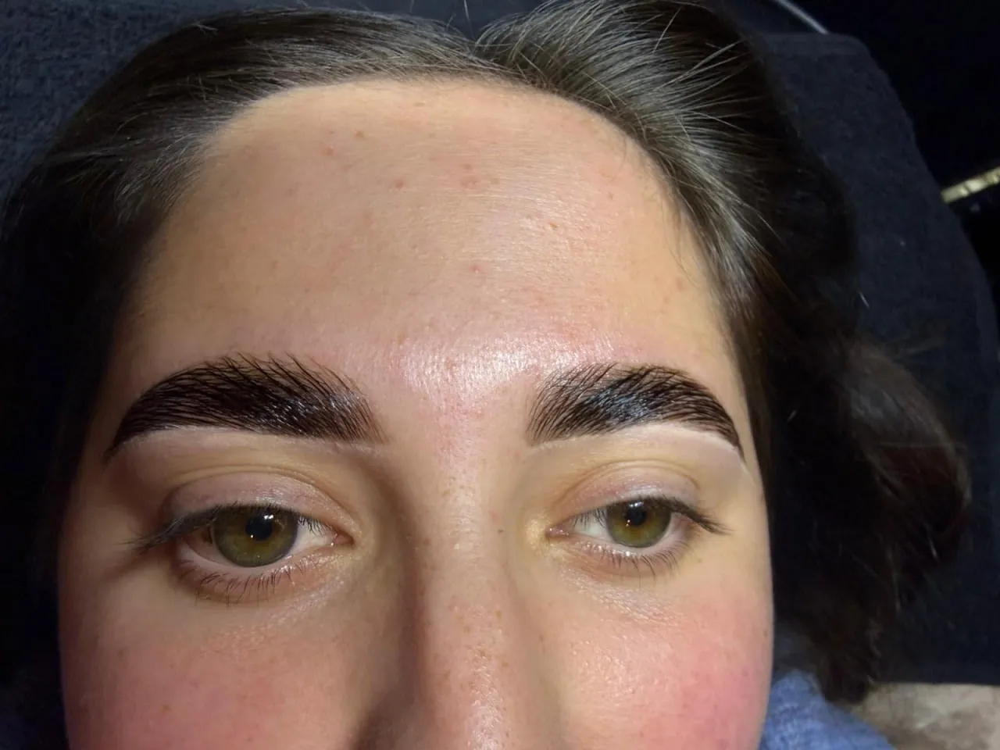
Kies jouw brow-behandeling
Drie behandelingen, van een nette basis tot een complete brow make-over. Ze beginnen allemaal met shapen op jouw gezichtsvorm.
-
Netjes bijwerken
Brow Shape
€20± 30 min
Je wenkbrauwen worden professioneel in model gebracht door te epileren en/of te trimmen. Voor een nette, verzorgde basis.
- Epileren
- Trimmen
- Shapen op maat
-
Meer kleur en definitie
Brow Signature
€40± 40 min
We shapen je brows zorgvuldig en werken af met jouw keuze uit henna of hybrid tint, voor mooi gevormde en gedefinieerde wenkbrauwen.
- Shapen
- Henna of hybrid tint
-
Voller, gelift en fluffy
Brow Luxe
€57± 60 min
De complete brow make-over. Je wenkbrauwen worden gelift en fluffy gestyled met een lamination, zorgvuldig geshaped en afgewerkt met hybrid tint of henna.
- Lamination
- Henna of hybrid tint
- Shapen
| Brow Shape | Brow Signature | Brow Luxe | |
|---|---|---|---|
| Shapen (epileren en/of trimmen) | ✓ ja | ✓ ja | ✓ ja |
| Henna of hybrid tint | – nee | ✓ ja | ✓ ja |
| Brow lamination | – nee | – nee | ✓ ja |
| Duur | ± 30 min | ± 40 min | ± 60 min |
| Blijft mooi | – | kleur ± 2–4 weken | lift ± 6–8 weken |
| Prijs | €20 | €40 | €57 |
Henna, hybrid tint of lamination?
Kleur geeft definitie, een lamination geeft lift en volume. In de Brow Luxe krijg je allebei.
Henna of hybrid tint
Allebei geven ze je wenkbrauwen kleur en definitie, zodat ze voller en verzorgd ogen. Je kiest zelf welke je wilt. Twijfel je, dan denkt Selina met je mee.
Blijft ± 2–4 weken mooiBrow lamination
Je wenkbrauwharen worden gelift en in model gestyled, voor gelifte, fluffy en vollere brows. Onderdeel van de Brow Luxe, samen met kleur en shaping.
Houdt ± 6–8 wekenVoor & na uit de studio
Sleep over de foto om te vergelijken. Echte klanten, foto's alleen met toestemming.
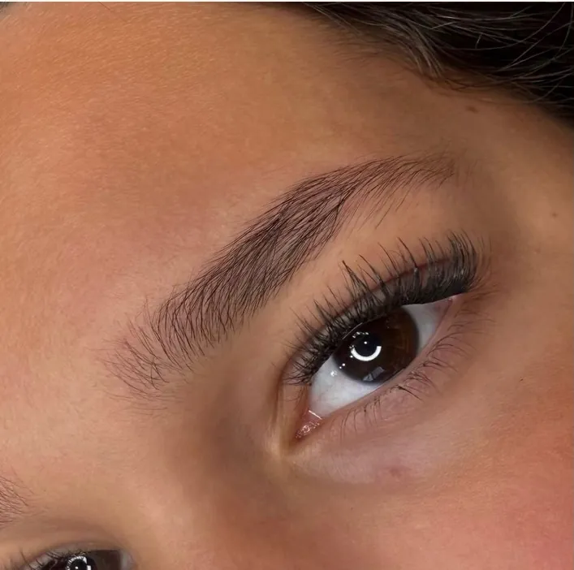
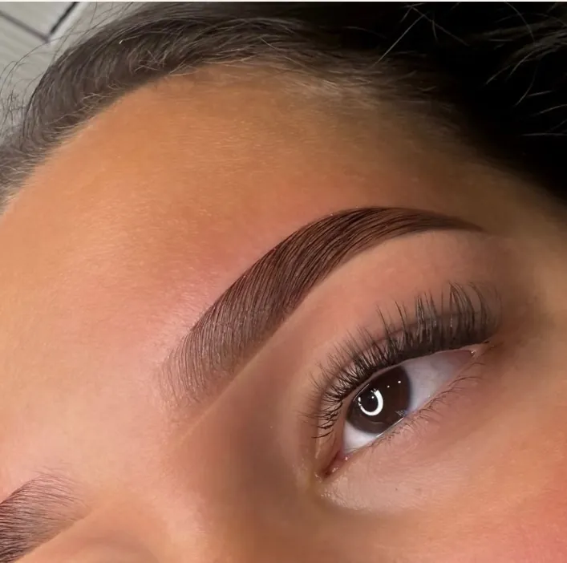
VoorNa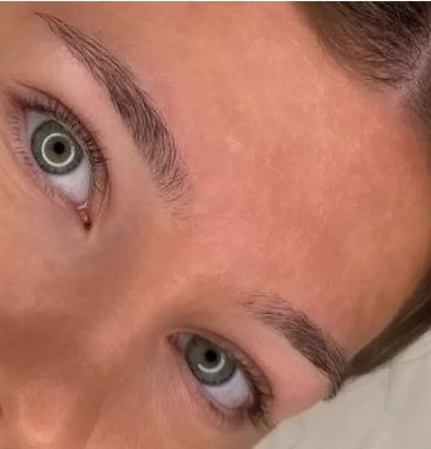
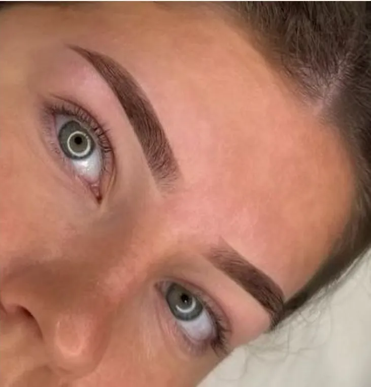
VoorNaMeer resultaten
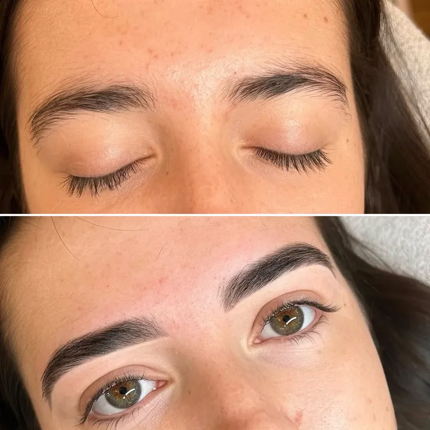
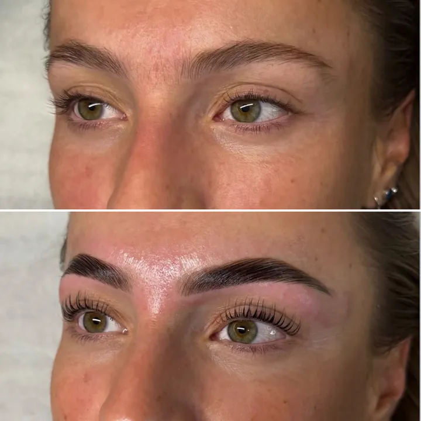
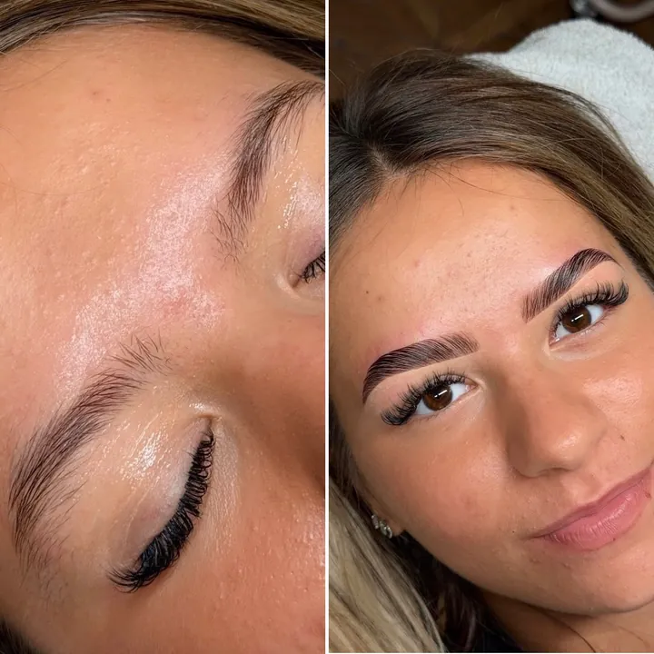
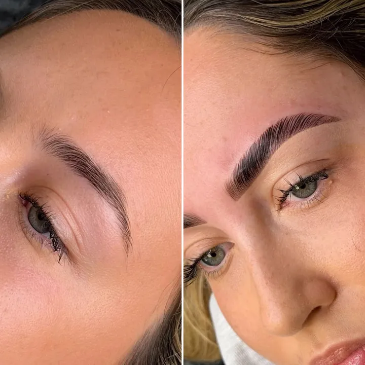
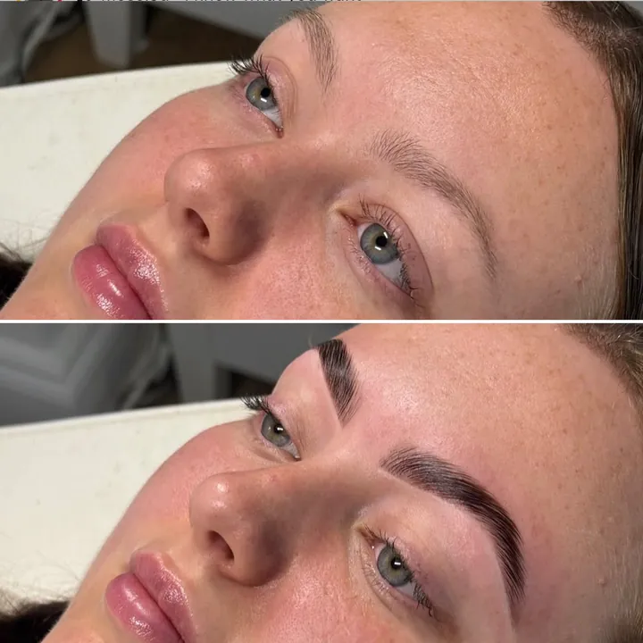
Swipe voor meer resultaten
Zo gaat je afspraak
Altijd 1 op 1 met Selina, in de studio aan de Dorpsstraat in Elst.
Samen kijken
We bespreken je wens en kijken naar je gezicht en natuurlijke vorm.
Shapen
Je brows worden in model gebracht door te epileren en/of te trimmen.
Kleur of lift
Bij Signature henna of hybrid tint. Bij Luxe komt daar de lamination bij.
Even in de spiegel
Je bekijkt samen met Selina het resultaat.
Voor je afspraak
Kom bij voorkeur zonder make-up op je wenkbrauwen, dan kunnen we direct beginnen.
Na je afspraak
Kleur blijft ± 2–4 weken mooi, een lamination ± 6–8 weken. Vraag Selina gerust hoe je je brows het beste verzorgt.
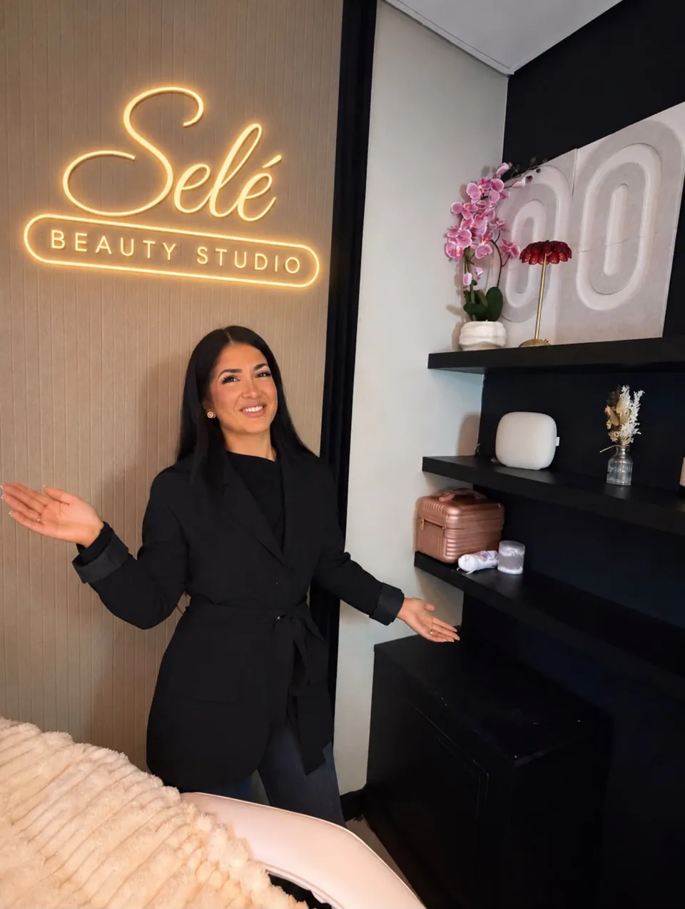
Hi, ik ben Selina
Bij een brow-afspraak kijk ik eerst naar jouw gezicht en natuurlijke vorm. Pas daarna kiezen we samen wat bij je past.
Wanneer je bij mij in de stoel zit, draait het om jou. Persoonlijke aandacht, kwaliteit en oog voor detail. Het moment waarop je in de spiegel kijkt en écht blij bent, daar doe ik het voor.
Boek een afspraak bij SelinaVragen over wenkbrauwen
Staat je vraag er niet bij? Stuur een DM op Instagram of lees welke behandeling bij je past.
Welke brow-behandeling past bij mij?
Wil je vooral een nette basis, kies dan Brow Shape. Wil je meer kleur en definitie, dan past Brow Signature. Voor gelifte, fluffy en vollere brows kies je Brow Luxe. Twijfel je? Stuur een DM op Instagram, Selina denkt met je mee.
Wat is het verschil tussen Brow Signature en Brow Luxe?
Brow Signature is shaping plus henna of hybrid tint (€40, ± 40 min). Brow Luxe is lamination plus hybrid tint of henna plus shaping, voor gelifte, fluffy en vollere brows (€57, ± 1 uur).
Hoe lang blijven mijn brows mooi?
Henna of hybrid tint blijft ± 2–4 weken mooi. Een lamination houdt ± 6–8 weken, afhankelijk van je haar en hoe je je brows verzorgt.
Doet een brow lamination pijn?
Je ligt even rustig terwijl je brows gelift en in vorm gebracht worden. Heb je een gevoelige huid of allergieën? Meld het vooraf, dan kijkt Selina wat verstandig is.
Moet ik iets voorbereiden?
Kom bij voorkeur zonder make-up op je wenkbrauwen, dan kunnen we direct beginnen.
Lees per behandeling
Brow laminationHenna browsWenkbrauwen epilerenHenna, hybrid tint of lamination?
Wenkbrauwen in de regio
ArnhemNijmegenBemmelHuissenDrielZettenLentWageningenHeterenOosterbeekRenkumGendtWestervoortBeuningen
Kom langs in Elst, tussen Arnhem en Nijmegen
Selé Beauty Studio
Dorpsstraat 57
6661 EG Elst (Gld)
De kaart wordt geladen via Google Maps. Daarbij deelt je browser gegevens met Google.
Openingstijden
Bekijk de tijden hieronder
- Maandag10:00 – 17:00
- Dinsdag10:00 – 17:00
- Woensdag10:00 – 17:00
- Donderdag12:00 – 21:00
- Vrijdag10:00 – 17:00
- Zaterdag10:00 – 17:00
- Zondag12:00 – 17:00